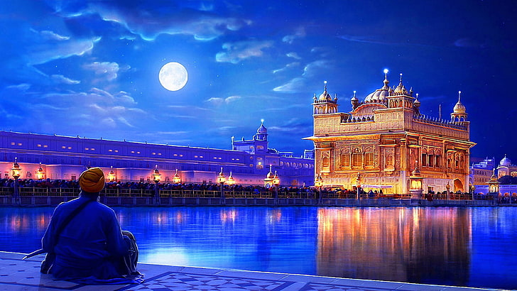
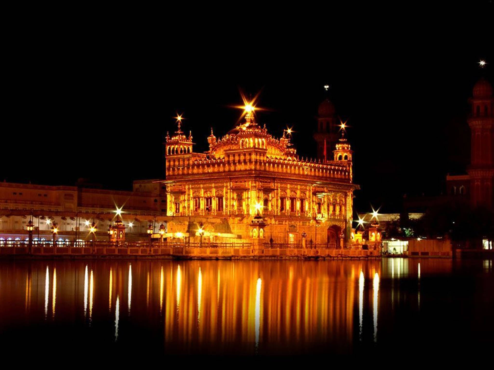
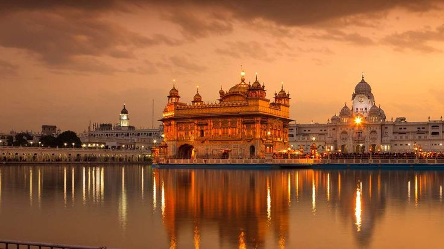
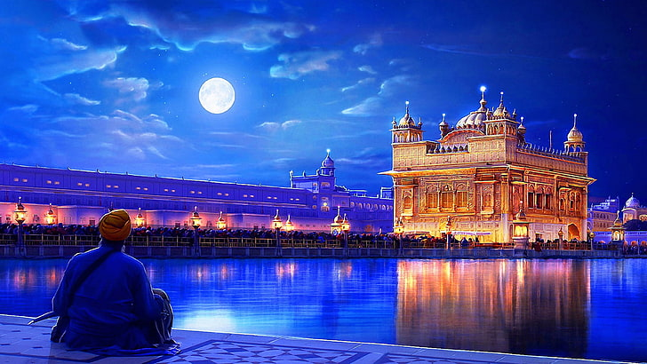
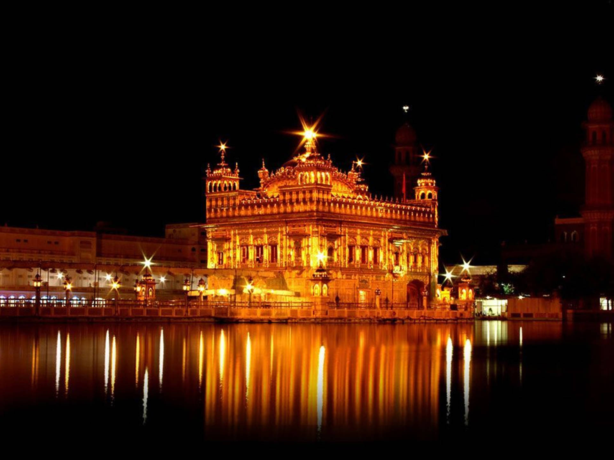
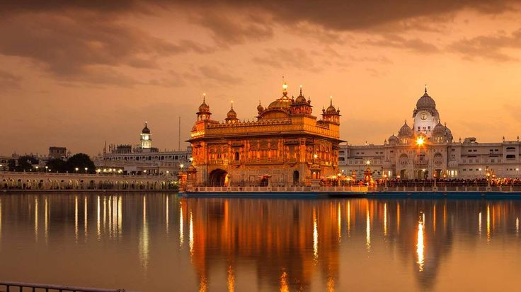
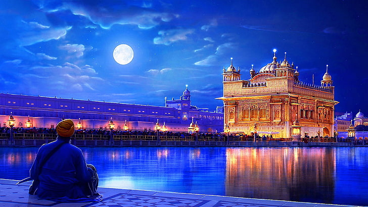
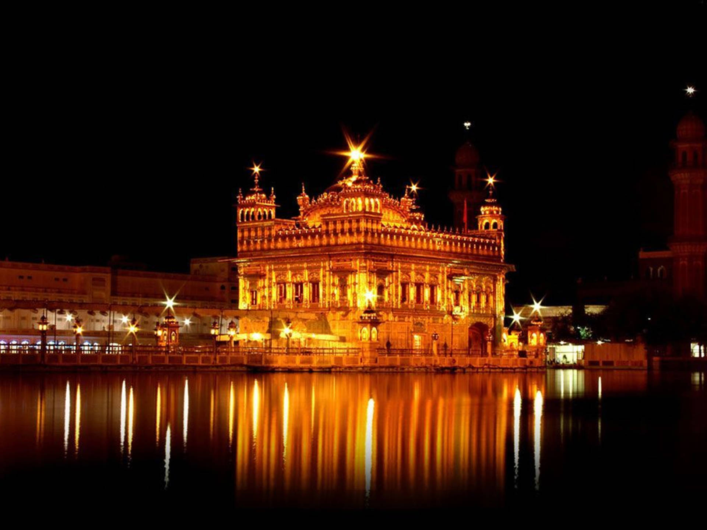
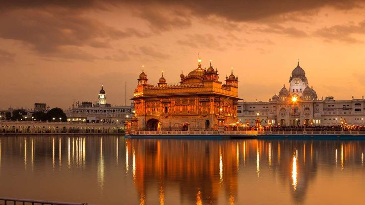

Image Gallery
 





A Marvel of Spirituality and Architecture
The Golden Temple, also known as Sri Harmandir Sahib, is located in Amritsar, Punjab, India. It is the holiest gurdwara of Sikhism. The foundation stone was laid by the Sufi saint Sai Hazrat Mian Mir in 1581. It was completed in 1604 under the supervision of Guru Arjan Dev Ji, the fifth Sikh Guru.
The temple has seen several restorations over the centuries, most notably after its destruction by invaders in the 18th century. Maharaja Ranjit Singh covered the temple in gold in the early 19th century, giving it its iconic appearance.
The Golden Temple is a blend of Islamic and Indian architectural styles. The sanctum is surrounded by a man-made pool, known as the Amrit Sarovar, which is believed to have healing properties.
The Golden Temple is not only a place of worship for Sikhs but also a symbol of equality and humility. People from all faiths and walks of life are welcome here.
The Langar, or community kitchen, serves free meals to thousands of visitors every day, embodying the Sikh principle of seva (selfless service).



Entry is free, but donations are welcome.